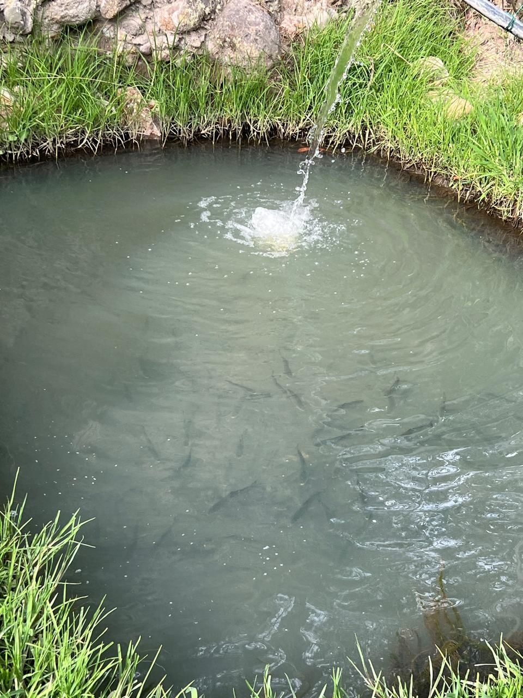
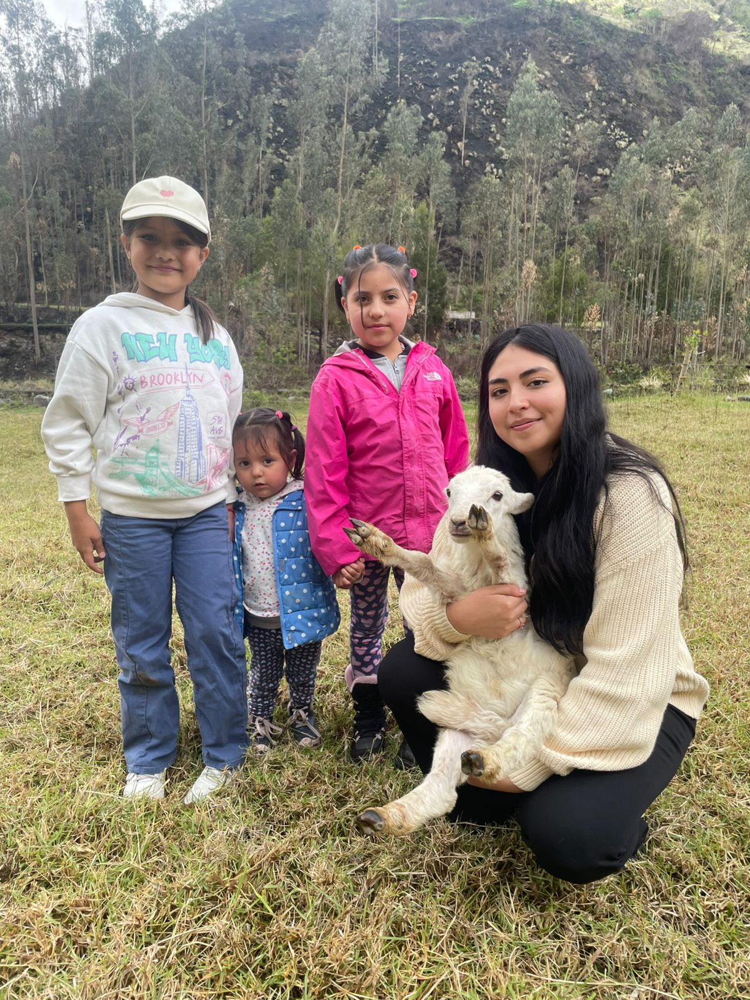

LA RUTA
Explora el recorrido completo y planifica tus paradas favoritas.
Ruta Quilotoa Trail
HOSPEDAJE
Elige tu mejor opción para hospedarte y relajarte


ACTIVIDADES
Programas auténticos en granjas y paisajes andinos, operados por la comunidad.





Guías locales certificados
Conocimiento de territorio, seguridad y acompañamiento en tu idioma.
Guía Local 1
Español
Español
¿Listo para empezar?
Escríbenos fechas, número de personas y actividades que te interesan.